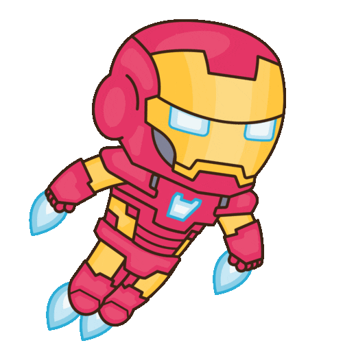
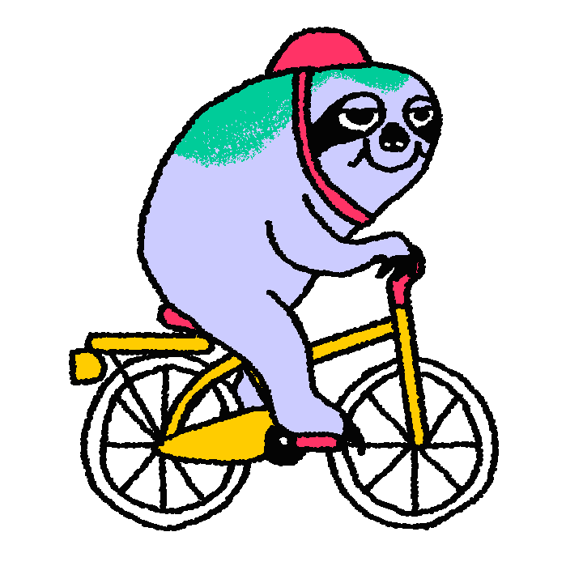
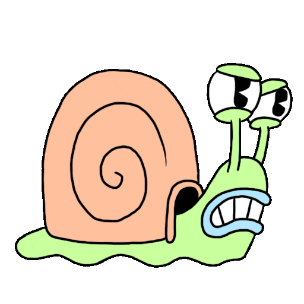
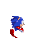
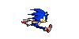

Let's give
the mind a
shake?





:doodle {
--rspeed: @r(28s, 35s);
--delay: @r(-200ms, -10ms);
--cycle: @r(.5s, 2.5s);
--angle: @r(2deg, 4deg);
--da: @r(1vmin, 8vmin);
--db: @r(1vmin, 8vmin);
--bg: hsl(@r(70), 10%, 30%);
@grid: 1x200 / 50vmin;
animation: r var(--rspeed) linear infinite;
width: 60em; height: 50em;
}
@size: 1px 100%;
@place-cell: center;
transform: rotate(calc(
@calc(@i() - 1) * var(--angle)
));
:after {
content: '';
@size: 100%;
background: var(--menu-color);
will-change: transform;
animation:
w var(--cycle) linear
calc(@i() * var(--delay)) infinite;
}
--f: calc(@sin(@i() / 4) * @PI());
@keyframes w {
0 { transform: translateY(calc(var(--da) * var(--f))) }
50% { transform: translateY(calc(var(--db) * var(--f))) }
}
@keyframes r {
to { transform: rotate(@p(-1turn, 1turn)) }
}